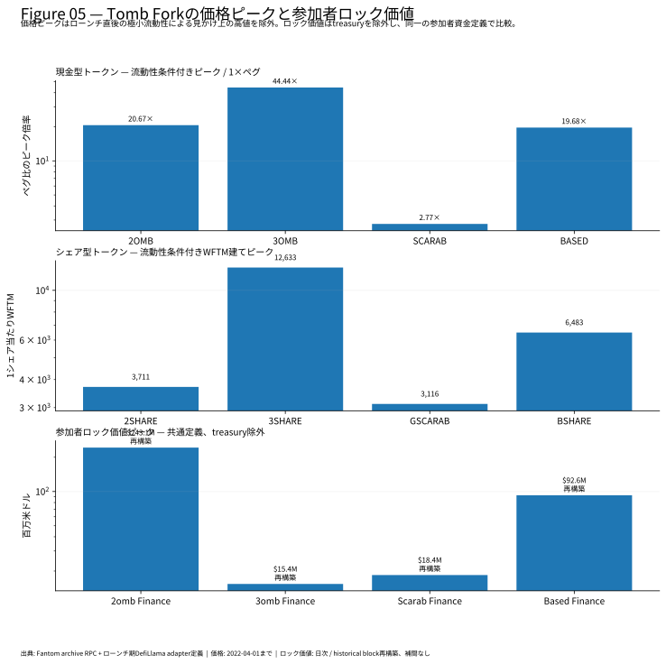
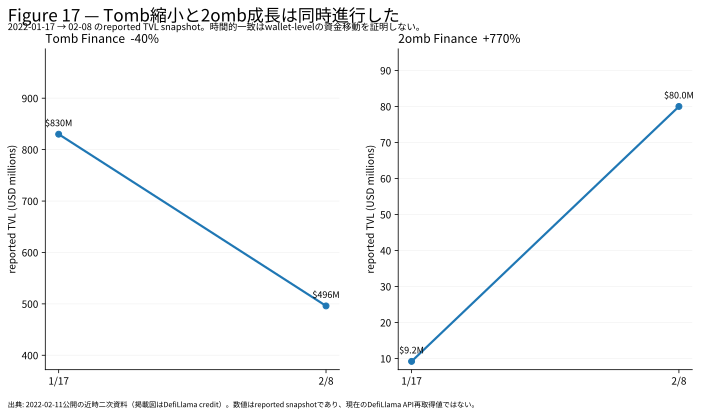
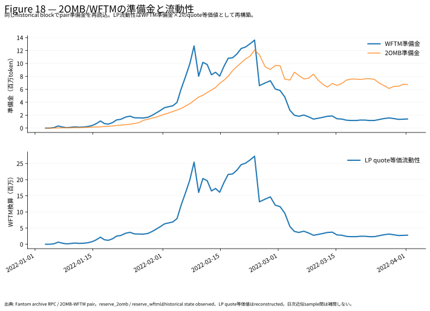
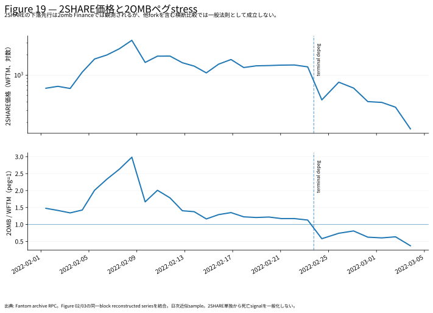
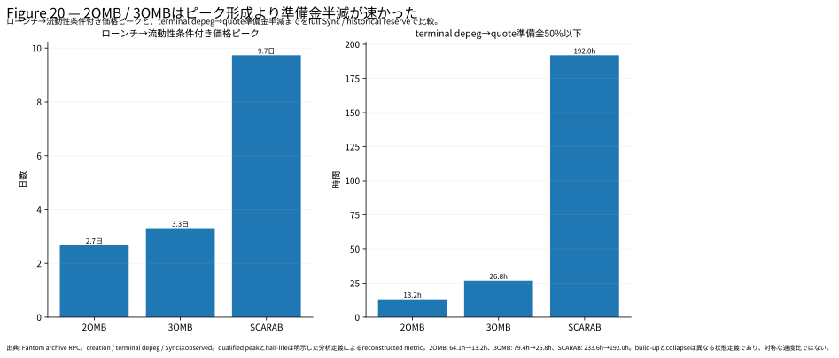

From Money Printer to Graveyard
1. Starting from the Graveyard
In crypto market history, the most revealing moment is sometimes not the invention of a mechanism. It is the moment everyone starts copying it.
From late 2021 into early 2022, a wave of protocols modeled on Tomb Finance spread across Fantom-centered DeFi markets. Scarab Finance, 2omb Finance, 3omb Finance, Based Finance. The names, peg targets, and reward designs differed, but the market experience had a common shape.
Deposit the cash token into a liquidity pool. Earn the share token. Stake the share token. If the protocol enters expansion, newly issued cash tokens are distributed. Feed those tokens back into liquidity.
Tomb Finance did not dress up this loop in cautious language. Its own materials used the phrase "money printer."
Of course, no wealth was being created from nothing. New capital, token prices, liquidity, emissions, and participant expectations were reinforcing each other. While that reinforcement held, the loop could look like a printer.
And once one printer appears to work, the next step is easy to imagine. Someone builds a second one. Then a third, then a fourth.
The market gradually shifted from investing in Tomb Finance itself to searching for the next Tomb Finance.
This article digs that short-lived boom out of the graveyard. The goal is not to laugh at old high-APR DeFi. The goal is to reconstruct, as numerically as possible, how Tomb Forks appeared, how much capital they attracted, what prices they printed, how often they broke peg, how often they came back, and what ultimately changed.
The research combines contemporary official materials and community records with on-chain reconstruction on Fantom. We identified the relevant pair contracts and rescanned historical blocks, Sync events, Mint events, Burn events, and Swap events. The 2OMB/WFTM pair alone produced roughly 600,000 Sync events. Across several Tomb Forks, the resulting picture is very different from a simple all-time-high chart.
The first result was not intuitive.
Breaking peg was not rare.
Using end-of-block prices, we extracted 177 depeg episodes across four major protocols. Of those, 122 episodes, or 68.9%, re-pegged within one hour. Within three hours the rate was 77.4%; within six hours, 84.2%; within twenty-four hours, 92.7%.
Only three episodes failed to re-peg within the study window.
The key to understanding the Tomb Fork graveyard was not simply when a peg first broke.
The key was why some breaks recovered, while a few never recovered within the observed window.
That is where the story should begin.
2. The Ancestry: From Basis to Tomb Finance
It is too simple to describe Tomb Finance as merely a fork of Basis Cash.
Its deeper ancestry lies in the Basis idea: using crypto assets to recreate something like central-bank supply adjustment. Basis Cash was one of the better-known DeFi implementations of that idea. Tomb Finance, however, described itself as a three-token protocol influenced not only by the original Basis concept but also by earlier seigniorage-style implementations such as bDollar and soup.
The basic structure was cash, share, and bond.
The cash token tries to maintain a peg to a target asset. The share token resembles a claim on issuance benefits during expansion. The bond token is designed to absorb supply when the cash token trades below peg and to offer exposure to a future recovery.
In theory, this looks like a small monetary experiment.
Once placed inside a DeFi market, its meaning changed.
The share token was not only a claim on future issuance. It became a speculative asset tied to extreme APRs. As demand for the cash token increased, the cash token traded above peg, and emissions continued, holders of the share token received newly issued cash tokens.
The expectation that this loop would continue pushed the share token higher, and a rising share token attracted more participants.
Tomb Finance connected this structure to FTM. TOMB targeted a peg to FTM, and the economy formed around TOMB-FTM liquidity, TSHARE, and the Masonry. This mattered because the mechanism was layered on top of Fantom's own growth narrative.
Tomb Finance was not just another algorithmic stablecoin experiment. It became a DeFi machine for participating in the growth story of Fantom.
3. Tomb Finance Nearly Died Once
One failure in Tomb Finance's own history is important for understanding the fork culture that followed.
Tomb Finance was not smooth from the start. In 2021, it suffered a serious crisis and came close to collapse. It was later revived under a rebuilding effort led by investor Harry Yeh.
According to the protocol's own retrospective, TVL then grew from roughly $2.5 million to a peak of about $1.6 billion over roughly four months. That is around 640x on a simple multiple basis.
This success gave later forks two stories.
The first was a success story: this mechanism could become huge.
The second was a recovery story: even a dangerous peg episode did not necessarily mean death.
In retrospect, the second story may have mattered more. The on-chain reconstruction in this study also shows that a depeg did not automatically mean a protocol was finished. The hard question was where to draw the line between an ordinary temporary depeg and a failure to recover.
Market participants at the time did not have that boundary.
Once Tomb Finance became large, attention could no longer remain confined to the original protocol.
4. "I Missed Tomb"
Community records from December 2021 suggest that demand for later forks existed before many of those forks appeared.
The sentiment was simple: I missed Tomb Finance; I want the next Tomb Fork for a short-term degen play.
That matters. If we only look at developers copying code, we cannot explain why so many forks found demand so quickly. The market itself wanted "the next Tomb."
Scarab Finance appeared in December 2021. 2omb Finance and 3omb Finance followed in January 2022. Based Finance followed in February.
When each new fork appeared, participants were not only comparing technical differences with Tomb Finance. A more urgent question was whether they were still early.
For participants who believed they had missed the early upside in Tomb Finance, each new fork offered a second entry point.
By then, the Tomb Finance model was no longer only a financial protocol. It had become a reproducible speculative format.
5. 8.7x in 22 Days: 2omb Finance
2omb Finance is the clearest example of that second-entry-point market becoming real.
Contemporary sources indicate that 2omb Finance TVL grew from roughly $9.2 million around 2022-01-17 to roughly $80 million around 2022-02-08. That is about 8.7x in 22 days.
During the same period, Tomb Finance TVL reportedly fell from roughly $830 million to roughly $496 million.
It is tempting to write that capital moved directly from Tomb Finance to 2omb Finance. The data does not prove that. Fantom-wide TVL was also rising sharply in January 2022, so the parallel movement cannot be treated as direct wallet-level migration.
In this article, Figure 17 is therefore used only as evidence of simultaneity: Tomb Finance was shrinking while 2omb Finance was expanding rapidly.
Even with that limitation, the speed of 2omb Finance's growth remains striking.
The on-chain reconstruction also revealed a second issue: the phrase "roughly $80 million TVL" was not a simple fact.
Around 2022-02-08 11:00 Japan Standard Time, using the launch-era contract structure, we reconstructed roughly $82.54 million in Pool2 value and roughly $160.55 million in 2SHARE staking value. Combined as participant-locked value, the total was roughly $243.09 million.
$80 million and $243 million.
The difference is almost threefold.
That does not mean one number was simply wrong. It means the word TVL was doing too much work.
6. TVL Is Not One Number
TVL is one of the most convenient and most dangerous numbers in DeFi history.
It appears as a single line on a chart, which makes it feel as if "the TVL of this protocol" exists somewhere on-chain as a natural value.
It does not.
At least for the Tomb Forks examined here, what counted as TVL depended on the adapter code and classification rules used by the aggregator.
When we traced the launch-era DefiLlama adapter for 2omb Finance through Git history, Pool2 and staking were treated as separate categories. Later, the same adapter incorporated 3omb Finance's Genesis Pool.
In other words, the label "2omb TVL" could refer to different measurement scopes at different points in time.
Scarab Finance used a different set of contracts. Based Finance separated Pool2, BSHARE staking, and Treasury. The early 3omb Finance adapter was centered on the Genesis Pool.
If those differences are ignored, a comparison between protocols can confuse differences in measurement code with differences in economic scale.
For that reason, this study uses a separate comparison metric: participant-locked value. It includes Pool2, staking, and participant deposits, and it excludes Treasury. It is stored separately from contemporary headline TVL.
Under that harmonized definition, reconstructed peaks were approximately $243.09 million for 2omb Finance, $92.60 million for Based Finance, $18.45 million for Scarab Finance, and $15.39 million for 3omb Finance.
The important point is not to call this "true TVL."
It is a reconstructed metric with a defined measurement scope.
TVL is not a natural observation. It is a number produced by a measurement method.
That basic point becomes surprisingly important when reading past DeFi booms in numbers.
7. Was the All-Time High Really the High?
Prices carry a similar trap.
In an AMM, if liquidity is extremely thin, a small trade can print an extreme price. If a charting service records that moment, it may survive as an all-time high.
When we scanned all Sync events for 3OMB/WFTM, the raw peak was roughly 2,437 FTM. Taken literally, that suggests 3OMB briefly traded above 2,000 FTM.
But the quote-side liquidity at that moment was only about 99 FTM.
When we applied a pre-defined liquidity filter, the comparable 3OMB peak fell to roughly 44.44 FTM.
SCARAB showed the same issue. Its raw peak was roughly 27.54 FTM, but its liquidity-qualified peak was roughly 2.77 FTM.
The raw all-time high should not be deleted. It was observed on-chain.
But it should not be placed in the same column as a peak observed in a market with meaningful liquidity.
Figure 05 separates those two concepts.
Once that distinction is made, the Tomb Fork Boom changes from a list of absurd price prints into a more precise market history.
How much liquidity was present? How much premium was sustained under that liquidity? Those questions are more useful than the largest raw tick.
8. Does Breaking Peg Mean Death?
When we began reconstructing Tomb Fork history, the most natural marker seemed to be the first depeg.
The full Sync-event history showed that this marker was not very useful.
2OMB traded below 1 FTM on its launch day. Not just once. It broke below peg, recovered, broke again, and later grew substantially.
For this study, we therefore collapsed multiple Sync events inside the same block into the final end-of-block state for 2omb Finance, 3omb Finance, Scarab Finance, and Based Finance. A depeg episode begins when the end-of-block price moves from >= 1 to < 1. It ends when the end-of-block price first returns to >= 1. This avoids counting every tiny event-level crossing as a separate market state.
The result was 177 depeg episodes.
- 2omb Finance: 9
- 3omb Finance: 39
- Scarab Finance: 116
- Based Finance: 13
Of those, 122 episodes, or 68.9%, re-pegged within one hour. Within three hours, 137 episodes, or 77.4%, had re-pegged. Within six hours, 149 episodes, or 84.2%, had re-pegged. Within twenty-four hours, 164 episodes, or 92.7%, had re-pegged.
Only three episodes failed to re-peg within the study window: one each in 2omb Finance, 3omb Finance, and Scarab Finance. Based Finance had none.
In Tomb Fork markets, breaking peg was common. Failing to recover was rare.
The first-depeg-as-death-signal hypothesis was not supported.
9. The Same Depeg Did Not Die the Same Way
If depeg itself was not a death signal, the next question is what happened after depeg.
This study compared LP withdrawal, cash-token selling, share-token price movement, and unrecovered duration after depeg.
The key methodological point is that the 177 episodes cannot be treated as 177 independent observations. A short-lived depeg can be followed almost immediately by another depeg. If we mechanically attach a fixed observation window to each episode, we may attribute a later collapse to an episode that had already recovered.
To avoid that pseudo-repetition, each decision point keeps only episodes that had not yet re-pegged. We call that set the risk set.
With this correction, the sample shrinks quickly.
- Still unrecovered after one hour: 55 episodes
- Still unrecovered after three hours: 40 episodes
- Still unrecovered after six hours: 28 episodes
When restricted to mature markets with sufficient liquidity, only three episodes remain in the six-hour risk set.
That shrinkage is itself part of the result. Most depegs were absorbed quickly. Only a small subset persisted.
Did persistent depegs fail in the same way?
They did not.
In 2omb Finance and 3omb Finance, LP withdrawals and cash-token selling appeared to intensify over time during terminal episodes. In Scarab Finance, the same indicators did not perform in the same way. Based Finance recovered despite a major decline in its share token.
Even among Tomb Forks, the failure paths differed.
10. Separating LP Exit from Token Selling
A single stress number hides too much.
Was liquidity leaving? Was the cash token being sold? Were both happening? Or was this only a temporary price move?
We therefore separated Mint, Burn, and Swap events. Mint and Burn events were used to infer LP additions and withdrawals. Swap events were used to infer cash-token buying and selling.
In the collapse windows for 2omb Finance and 3omb Finance, LP withdrawals and cash-token selling occurred together. This was not merely a price decline. Liquidity was shrinking while sell pressure remained.
But the data does not prove that selling caused LP withdrawal, or that LP withdrawal caused selling. What the on-chain record shows is that both were observed in the same period, and that in some protocols the combined stress intensified over time.
Proving causality would require wallet-level behavior, LP holder migration, external news, operator intervention, and other context.
This article therefore limits the claim to observed simultaneity and sequence.
Even with that limit, the decomposition matters. TVL alone mixes liquidity withdrawal, price decline, and changes in measurement scope. AMM event decomposition lets us read liquidity contraction and sell pressure separately.
11. Could Collapse Have Been Predicted? The Simple Hypotheses Broke
At this point, the natural question is whether collapse was predictable.
We tested several simple hypotheses. Did a decline in the share token lead sustained depeg in the cash token? Did combined stress from LP exit and cash-token selling predict terminal depeg?
Here, terminal means "did not re-peg within the study window." It does not mean permanent protocol death.
At first, one candidate rule looked promising. The rule required an episode to remain unrecovered after six hours, to show increasing combined stress from one hour to three hours to six hours, and to still show net LP withdrawal and net cash-token selling at six hours. That rule captured the terminal cases in 2omb Finance and 3omb Finance.
Applied to the expanded 177-episode set, however, it was weak as a death predictor.
The six-hour risk set contained 28 episodes. Eight were candidate positives. Against the terminal label, the result was 2 true positives, 6 false positives, 19 true negatives, and 1 false negative. Precision was 25.0%, recall was 66.7%, and specificity was 76.0%.
That is not good enough as a death predictor.
The shape of the failure is more important than the score itself. The rule captured the terminal episodes in 2omb Finance and 3omb Finance, but all six false positives were Scarab Finance episodes. The single Scarab Finance terminal episode was the false negative.
The "stress intensifies over time" failure path visible in 2omb Finance and 3omb Finance did not transfer cleanly to Scarab Finance.
The rule was not useless, however. If the target variable is changed from terminal depeg to "failed to re-peg within twenty-four hours," the result becomes 6 true positives, 2 false positives, 13 true negatives, and 7 false negatives. Precision rises to 75.0%, and specificity to 86.7%.
The six-hour stress trajectory is therefore better read as a high-precision auxiliary signal for prolonged stress, not as a direct predictor of death.
The research conclusion is not that we found the predictor.
It is that several simple predictors were clearly broken.
12. Measuring Recovery Capacity
If a single death signal does not work, what should we measure?
The strongest fact in the 177-episode distribution is that most depegs recovered. 68.9% re-pegged within one hour, 84.2% within six hours, and 92.7% within twenty-four hours.
The task is not to classify every episode as safe or fatal in one step. It is to observe how the market state changes.
At minimum, this study suggests the following state model:
NORMAL -> STRESS -> unrecovered persistence -> protocol-specific deterioration / recovery
We initially expected to see clear recovery attempts: LP additions and cash-token buying reversing the earlier stress. The Replay challenged that expectation too.
Among the 174 episodes that re-pegged within the study window, recovery times were widely distributed.
- Within one hour: 122 episodes, median roughly 0.095 hours, or 5.7 minutes
- One to three hours: 15 episodes, median roughly 1.70 hours
- Three to six hours: 12 episodes, median roughly 3.99 hours
- Six to twenty-four hours: 15 episodes, median roughly 8.28 hours
- More than twenty-four hours: 10 episodes, median roughly 48.24 hours
Ten episodes recovered only after more than twenty-four hours. "No re-peg within twenty-four hours" is therefore not equivalent to death.
Nor did recovery always show a clean reversal in flows. Defining cumulative absorption as LP additions plus cash-token buying, the median absorption for episodes that recovered after more than twenty-four hours was roughly -9.31%. In many cases, cumulative flow was still stress-directional at the moment of re-peg.
The six false positives from the six-hour deterioration candidate were all Scarab Finance episodes. Their median recovery time was roughly 31.96 hours. Only two had positive net absorption from six hours after depeg to the re-peg point, and the median was roughly -1.90%.
In other words, the rule that "recovery must be preceded by clear LP inflow and buyback" was not supported.
AMM price is set by reserve ratios at a given moment. Cumulative flow is only part of the story. Liquidity size, price elasticity, bond and treasury design, external intervention, and participant composition can all affect recovery.
The fact that Scarab Finance produced different false positives and false negatives from 2omb Finance and 3omb Finance strongly suggests protocol-specific behavior.
If we want a recovery signal, we should not rely on one threshold across all Tomb Forks. We need to separate a common observation layer from protocol-specific models.
The common layer should measure unrecovered duration, net LP withdrawal, net cash-token selling, stress trajectory, share-token movement, and liquidity size.
Protocol-specific models should then add peg mechanisms, Treasury behavior, Bond design, external intervention, and the structure of major LP holders.
The 177-episode Replay did not teach us whether the right threshold is six hours or twenty-four hours.
It taught us that the mechanisms of recovery and failure differ by protocol, even when the depeg looks similar.
13. What the Tomb Fork Graveyard Teaches
The Tomb Fork Boom can be compressed into one story.
A successful protocol creates a narrative.
The narrative is copied.
Capital that wants to be early moves toward the copy.
High APRs and rising share tokens increase demand for the cash token and deepen liquidity.
Liquidity and price appreciation make the APR and the narrative look stronger.
While that reflexive loop continues, participants see a money printer.
When the loop weakens, the same design runs in reverse. Expectations for the share token fade. The cash token is sold. LPs withdraw. Selling and withdrawal reduce reserves, worsen price elasticity, and reinforce fear.
The important finding of this study is that even this final stage was not uniform.
2omb Finance, 3omb Finance, and Scarab Finance all experienced terminal depeg episodes. But liquidity exited differently, stress trajectories differed, and share-token behavior differed. Based Finance recovered despite a severe share-token decline.
There is no single template for how a Tomb Fork dies.
What this market showed instead is that markets with similar mechanisms, similar narratives, and similar speculators can still have different failure modes.
This is not only a story about Fantom in 2022.
Meme coins, new L1s and L2s, restaking, yield-bearing tokens, and social-media-driven small-cap crypto assets repeatedly produce similar patterns. A successful format appears, copies flood the market, and participants who missed the original search for a second entry point.
When that happens, the relevant questions are not just the name or the APR.
What exactly is TVL measuring?
How much liquidity stood behind the all-time high?
During stress, who sold, who removed liquidity, and who stayed?
And where do seemingly similar protocols actually differ?
The Tomb Fork graveyard is not just a list of failed projects.
It is a preserved set of specimens showing how imitation, capital inflow, and reflexivity can inflate markets quickly and break them through different paths.
The money printer was never really printing money.
It was a machine that worked only while expectations and liquidity amplified each other.
That becomes clearest after the printer stops.
Evidence / Method
This article separates contemporary official materials, community records, public TVL references, and on-chain reconstruction on Fantom. Figure 17 uses a historical snapshot explicitly reported in a source published on 2022-02-11. It treats that value as reported and does not interpolate a continuous series from the current DefiLlama API. Figures 18-20 are reconstructed from Fantom historical state and events. The on-chain reconstruction uses Sync, Mint, Burn, and Swap events from major AMM pairs, historical getReserves, and block timestamps. Multiple Sync events inside the same block are collapsed into the final end-of-block state.
For the 177 depeg episodes, only episodes that remained unrecovered at each decision point were kept in the risk set. Future re-peg outcomes were used only as evaluation labels. This avoids pseudo-repetition from assigning overlapping fixed-length future windows to closely spaced episodes.
Limitations / Falsification
In this study, terminal means "did not re-peg within the study window." It does not mean permanent protocol death. The 177 episodes are clustered within protocols and are not 177 independent and identically distributed observations. Only three episodes are terminal, which is not enough to learn a statistically stable death predictor.
TVL and participant-locked value depend on measurement definitions. The study confirms simultaneity between Tomb Finance contraction and fork growth, but it does not prove direct wallet-level capital migration.
The study did not optimize thresholds after seeing outcomes for share-token movement, stress, LP exit, or cash-token selling. Hypotheses that failed are left in the article rather than removed.
Disclosure
This article is a historical case study and does not recommend buying or selling any crypto asset. The author and publisher have no disclosable conflict of interest relating to the subjects of this article.
Figures





